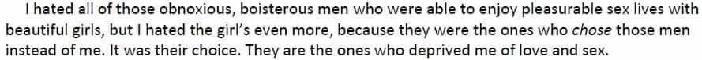

< < < Back
A Close Examination Of Elliot Rodger’s Twisted Manifesto – Return Of Kings
When I finished reading Elliot Rodger’s manifesto, I felt like I just read a script whose main character had shades of the combined personalities of Taxi Driver’s Travis Bickle + American Psycho’s Patrick Bateman + Psycho’s Norman Bates .
If you’d download his manifesto, you’d find within it:
The word “sex” (including associated derivatives) is found a whopping 189 times.
The word “game” is found 89 times – overwhelmingly pertaining to Rodger’s penchant of video games.
The word “retribution” is found 72 times.
The word “virgin” (and its derivatives) is found 70 times.
The word “blonde” (including “blondes”), is found 60 times.
Blondes, whether male or female, are Rodger’s fixation, and his racial ideal.
The word “hate” (including “hatred”) is found 48 times.
The word “pain” and “suffering” are found 32 times and 39 times respectively.
The word “kill” is found 38 times.
The word “reject” (including its derivatives) is found 34 times.
The word “deserve” (including “deserved”) is found 30 times, mostly in his self entitling statements.
The words “jealous” (including” jealousy) and “obnoxious” are found 29 times each.
The words “superior” (including “superiority”), and “inferior” (including “inferiority”) are found 12 times and 26 times respectively.
The words “envy” and its derivative “envious” are found 26 times and 12 times respectively.
The word “God” (including “Godfather” and “Goddess”) is found 13 times throughout the document – out of which Rodger refers to himself as ‘God’ on 9 occasions. The only instance of the word ‘Goddess’ appears when he describes a blonde (his fixation), which shows he used to pedestalize blondes as divine.
The word “player” (with its derivatives) is found 9 times, and not a single instance of it deals with seduction (game) theory.
The word “alpha” is found 7 times, and only two instances of it are linked to the word “alpha male”.
The word “PUA” is found 3 times, and each instance deals with the site PUAHate.com
The word “pickup” is found 3 times, and none of them deals with seduction.
The words “slutty” and “whore” are found once each.
The words “red pill”, “misogyny” , “manosphere”, “beta” , “seduction (or seduce)” are not found even ONCE.
Elliot Rodger was mentally ill. His manifesto reveals that people around him saw the red flag of his mental problems, but callous neglect of his case further led to his misanthropy.
I mentioned before about the social dangers which modern men face, which contribute to the psychological sexual desensitization of modern men. Mentally ill men like Elliot Rodger who are in need of proper counseling and support, cannot adapt to the dysfunctional social paradigms that we have constructed and are presently living in.
Elliot’s mind
Rodger’s twisted personality from the manifesto reveals:
- Psychological problems
- Inability to accept that life isn’t fair
- Thinking was primarily emotional, not logical
- Extreme jealousy, covetousness and capriciousness which would later drive his rage
- An entitled mindset wanting and expecting everything without effort
- Pedestalization of sex, and self-loathing because of his virginity
- A love of utopian fantasy and materialism
- Hatred of anyone who irritated his grandiose dreams
- Fear of physical confrontation, rejection and associated flighty behavior
- Attention seeking behavior by whining and crying
- Racial fetish: blonde fixation and white race pedestalization – half-Asian Elliot pedestalized white blonde females as the ultimate women
- Racial antipathy to those who he considered as lower races
- An inability to separate facts from fiction, and believe anything which held emotional appeal to him
- Self-pity whenever something was denied to him
- A crabby demeanor which used to take hurt to imaginary slights
- A need to fit into the crowd through sexual validation
- Distrust towards his family and others
- Passive-aggressiveness, secretiveness and sneaky behavior
- “If I can’t have it, no one should” mindset
- Emotion driven feminine responses (e.g. his approach to eating)
Furthermore, the timeline of events in his manifesto reveal that the actual seeds of misanthropy took root much before in Rodger’s teens, and not after he came to university. He was already a latent misanthrope, waiting to explode, by the time he had reached his school.
Exploring the numerous factors which led to the violence
(click on thumbnails to expand)
An envy driven personality:
1.
2.
Narcissism:
And do read the paragraphs where he refers to himself as “God”.
Exposure to pornography at a young age:
Negative childhood experiences with females:
A permissive society and media which over-sexualizes young children, making them think sex as a form of self-validation:
1.
2.
3.
4.
Peer shaming for males using sex:
His conjecture that he lacked a support base:
1.
2.
Realization of a modern twisted masculinity social paradigm at a young age:
Formation of his ‘asexual utopia’:
Modern shallow cultural materialism which shaped his perception of life and how he sought to emulate the rich out of envy:
1.
2.
3.
4.
A perception of a dysfunctional world for which he never found answers:
Psychological problems:
Racist bigotry:
1.
2.
Inability to handle exposure to modern over-sexualized female behavior:
1.
2.
3.
4.
Hatred of people who had sex:
1.
2.
3.
Fallacious thinking that women respond more to reason than emotion when it comes to attraction, and his subsequent inability to accept the reality:
1.
2.
Misanthropy born out of sexual frustration:
His following statement at age 17 directly rebutts feminists who fallaciously accuse PUAs and the manosphere of influencing Rodger into “misogyny”.
1.
2.
His ‘day of retribution’ was to be on the ‘good looking’ individuals whom he hated:
It’s too graphic to quote in entirety here. Search “retribution “in his manifesto to read it in detail.
The final phase was also to include some members of Elliot’s family. A misanthrope who believes in even not sparing his own family, that was what Elliot Rodger had become.
Evasion from authorities allowed him leeway:
What does one infer from reading all the above passages?
Mental illness + sexual frustration + racial bigotry + twisted callous permissive social paradigms + violent culture + class warfare+ callous treatment of his case, inspite of an attempt of intervention by his family = Monstrous rampage of misanthropy.
A mud-slinging campaign of irresponsible lies
With debate still going on the possible causes, feminists have already solely blamed PUAs and the manosphere for this tragedy. I wonder—before launching a war of irresponsible criminal yellow journalism full of myths which seeks to solely associate Rodger’s violence with PUA and manosphere influence—did these feminist mud slingers bother to even read his manifesto and analyze it to identify these numerous factors, and to even understand that his psychotic misanthropy began much before his teens, and that he was anti-PUA himself?
One of the absurd apologetic theories being thrown around by feminists is that misogynists hate men too. Isn’t ‘misanthrope’, the correct word for such a person who has hatred for both sexes?
Was Elliot Rodger in fact mentally ill, and not a PUA-influenced misogynist as claimed by feminists?
If Elliot Rodger was really a PUA-influenced “misogynist’ as claimed by feminists, then:
- Why didn’t he approach women?
- Why did he want to kill men as well?
- Why did he frequent an anti PUA site, which rubbished PUAs, i.e. PUA Hate.com?
In the timeline in his manifesto, Rodger discovered PUAHate in the spring of 2013 (at 21 or so), much later after his hatred of ‘young’ and ‘beautiful’ people who got sex had already been formed in his mind. Rodger had originally planned his day of retribution to be on Halloween 2013, and he had chosen Isla Vista because of the surplus of ‘good looking’ people there.
His actions and manifesto reveal psychotic misanthropy, rather than ‘misogyny’, which any individual who bothers to logically analyze his manifesto carefully, can conclude. He repeats his hatred for both genders who had sex, while he even planned his ‘First Phase of Retribution’ by beginning to first target men (his male roommates).
Are PUAs to blame?
‘Game’ is ‘seduction,’ practiced by both genders since antiquity. What would you call Casanova or Ovid who wrote Ars Amatoria in 2 AD, if they were alive today? PUAs that practiced and preached game. What were their lives all about? Seducing (picking up) women.
Even women practiced and taught ‘Game’. Read the lives of famous courtesans from medieval Europe or from antiquity, who were versed in the same art of ‘seduction’. Ninon de Lenclos was one example of a ‘female PUA’, for she even trained men on how to seduce women.
We’re living in a modern world where these historical characters have either been romanticized or glorified by literature, movies, folklore, etc. So aren’t these people’s media-peddled influences too responsible for ‘influencing’ Elliot Rodger – if it is really so as according to feminists—because they too were PUAs?
An integral part of PUA game theory is to approach women. Rodger talks several times of ‘pain and suffering because of women’ in his manifesto, all because he assumed women rejected him, without even approaching them! This shows he never followed PUA game theory, and instead he was full of excuses. Again, he was a game denialist – a reason why he frequented the PUAHate site.
Elliot Rodger’s traits were of the Nice Guy who self-pitied and self-loathed himself for not getting sex from his ideal women (blondes). He was nowhere a PUA, and definitely not one from the manosphere. If he was ever PUA-influenced, he would’ve focused on self improvement and on ridding himself of his fears of approaching and interacting with women. Most importantly, he would’ve understood and accepted that female rejection, flaking, and male baiting exists in reality. Instead, he avoided the people whom he thought were ‘judging’ him (particularly women whom he liked)—of whom he was afraid. He lacked confidence, paramount to be the ‘alpha’ he hoped to be.
Elliot had also built psychological walls around himself. His manifesto reveals that he would’ve rejected help from men to help him with women, because he would’ve perceived them as braggarts trying to demean him:

Thus, PUAs and the manosphere did not influence his crime, as he hated game theory, the men (PUAs) associated with it or men who were ‘successful’ with women.
Twisted modern social paradigms, the stigma of male virginity, and a covert war of misandry
In his manifesto, Elliot learns this by himself at age 11.
He uses the word ‘virgin’ 70 times throughout his manifesto to loathe himself. Clearly, Rodger felt stigmatized for remaining a virgin in a culture which promotes permissiveness, and often validates a man’s manhood (worth) and social value through copulation. Not that society owed him or anyone of us with sex. But often baits us with it, through media and real life without taking responsibility for it.
Society today presents twisted concepts of masculinity to modern men through media and real life scenarios. As explored from this article:
“Some lonely, dejected men may perhaps need reminding that nobody owes them sex or a relationship, ever.”
“Self-pity and self-loathing are not attractive traits, but they’re not in themselves misogynistic.”
(Elliot’s traits of self pity and self loathing)
“There is a danger in labeling men like this as misogynists or creeps, and it is not just the emotional harm to the men themselves. As feminists will be the first to explain, our culture polices masculinity. Those who deviate from an assertive, even aggressive masculinity are shamed as wimps or with homophobic slurs.”
Some of the links below (some from feminist sites) are all related to the internet rage against the Nice Guy syndrome – what Elliot embodied.
Who’s pushing the need for a “nice guy” to be an “alpha” here?
Contemporary women themselves often acknowledge preferring the nice guy for marriage, but not dating, in a twisted modern social paradigm. Thus nice guys finish last, even if they do somehow manage to finish at the finishing line. Elliot Rodger was 22. Some say that he should’ve hired a prostitute to get laid. But he states that he found them to be beneath him:
Elliot Rodger’s lifestyle was actually what the cultural left espouses for modern men. Didn’t feminism contribute to this violence? Rather, some say that “violence doesn’t have a race, a class, a religion, or a nationality, but it does have a gender.” This reeks of the modern inflated misandrist meme of feminists that all men are predators.
Are men the violent gender alone?
What about females raping men, almost as often but under-reported?
What about men facing female violence and brutality, but quietly ‘sucking it up’, due to modern social conditioning? What about feminist violence towards children through abortion? Are these women then not ‘misopedists’?
Game theory redux
In the modern world, with the shifting of gender roles, resurgent seduction theory has changed. The ‘nice guy’ or ‘chivalrous gentleman’, as seen above, is now often the ideal only in fiction, not reality. As we read Elliot’s manifesto, his experiences from his social environment and college life further corroborate this fact.
We’re living in an increasingly permissive society which baits and bombards us with sex. Can we deny this fact? A person with modern game knowledge understands this, and adapts his game (i.e. seduction strategies) accordingly. Rodger couldn’t handle nor do this.
He chose a passive approach to attract women: focus primarily on appearance and displays of wealth or status—hoping to generate attraction and expect women to initiate or chase –as he had seen wealthy men being chased by women.
Reading his manifesto, one wonders whether his coy approach to attract women, was also possibly influenced by him misconstruing the Law of Attraction with his mentally ill and fantasy filled mind:
Elliot Rodger’s case has many analogies. The story of Max Wade , published on ROK earlier, too shows some similarities minus mental problems: quick wealth and status seeking mindset, inability to handle rejection, easy access to arms, a blonde fixation, and an entitled complex that women owe sex because of cash and status. Again, was Max Wade red pill or a PUA student?
The degeneration of Rodger’s utopia
Elliot’s manifesto reveals a grown up male who felt his masculinity being policed by permissive ideals which he felt he had to validate through sex, while he saw women around him whose sexuality wasn’t policed at the same time. Women are the gatekeepers of sex and even more so with today’s liberal twisted modern social paradigms of sexuality. Rodger couldn’t accept this fact, as he thought he was a superior ‘gentleman’ who ‘deserved’ sex.
Today, women are not as socially constrained as their predecessors when it comes to mate selection and initiation of sex. Women (and men) unanimously say that ‘no one is “entitled” to sex’. You can only “entitle” yourself to a legalized “sexual right” – e.g. within marriage, where sex becomes a conjugal “right”, not a conjugal privilege.Sex has more or less become a conjugal privilege within marriages, thus “entitlement to sex” within marriages itself has become a contentious topic of debate, leading to sometimes sexless marriages.
Twisted masculinity and dysfunctional permissive social paradigms cannot be handled by the mentally ill
Men today have adapted themselves to permissive modern society by either choosing to go with the flow of social trends to be indifferent and jump on the feminist bandwagon, or learning game to adapt to it. The sexually frustrated ‘nice guys’ risk turning misogynist or even worse, misanthrope, like Rodger. These double standard laden social paradigms cannot be understood by mentally ill men, who need counseling and support.
Rodger’s case was that of a mentally ill child who could never get his most cherished desire—sex with his ideal women, i.e. blondes. He felt his life would’ve had meaning if he got validated through sex and losing his virginity. Our permissive modern society conditions young adults and youngsters especially to assert their sexualities by losing their virginity as soon as they attain puberty while adulthood and self-worth is validated through permissiveness and sex partner count. Again, not everyone can partake in it. At the same time, no one is entitled to it.
‘Elliot Rodger was a misogynist virgin loser’ is what some people have unbelievably commented in numerous blogs and articles. His crime was undoubtedly unforgivable. As seen above earlier, Elliot’s behavior leaned towards misanthropy. But why is his virginity highlighted to be stereotyped as a criminal or dysfunctional trait? What effect would these twisted social paradigms have on growing up children and the mentally ill? To highlight a culture which celebrates sluts and shames virgins?
An average male today, however, tolerates twisted modern social paradigms of sexuality and male baiting ‘to fit’ into modern society. But, our society must look within to address these very hypocritical social paradigms, to understand the law of cause and effect in this scenario.
Ancient Sparta used eugenics to select the fittest individuals to include in their society, while those who were unfit were thrown into a chasm on Mount Taygetos in their infancy.
We have the same eugenic paradigm for modern men to prove themselves, albeit in a psychological, sexual and social way. The Mount Taygetos of twisted modern masculinity eugenics today is administrated and policed by permissiveness, male baiting and feminist ideals. You either suck up and man up to these twisted societal paradigms, or you fail to adapt, only to be discarded to live a life of a sexual reject aka ‘Nice Guys’ or get branded as a ‘misogynist’ or a ‘player’ if you choose to ‘exploit’ this scenario . But mentally ill individuals like Rodger cannot adapt to this, and so they need counseling and adequate mental healthcare.
With due course of time, Elliot’s case will also fade from people’s memories. And all these factors will unfortunately continue to thrive in our culture.
Read More: The Manosphere Is Approaching A Tipping Point


{kind=link}
{kind=link}
{kind=link}
{kind=link}
{kind=link}
{kind=link}
{kind=link}
{kind=link}
{kind=link}
{kind=link}
{kind=link}
{kind=link}
{kind=link}
{kind=link}
{kind=link}
{kind=link}
{kind=link}
{kind=link}
{kind=link}
{kind=link}
{kind=link}
{kind=link}
{kind=link}
{kind=link}
{kind=link}
{kind=link}
{kind=link}
{kind=link}
{kind=link}
{kind=link}
{kind=link}
{kind=link}
{kind=link}
{kind=link}
{kind=link}
{kind=link}
{kind=link}
{kind=link}
{kind=link}